Följ spåret. Se framstegen.
Trax är en app för iPhone och Android som hjälper dig att lägga spår, träna hunden och följa utvecklingen över tid.
Snart i App StoreEngångsköp, ingen prenumeration.

129 kr149 krIntroduktionspris den första veckan, därefter 149 kr.Engångsköp, ingen prenumeration.
- Inget konto
- Ingen reklam
- Datan stannar i telefonen
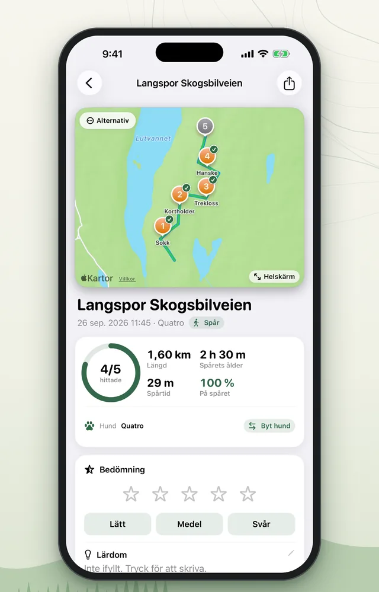
Android-bilderna visar appen på norska än så länge.
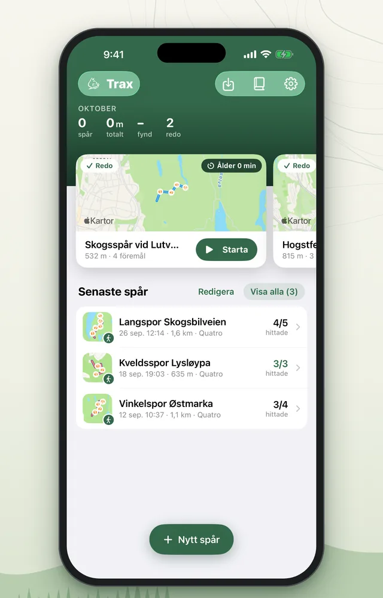
Allt på ett ställeMånadens siffror, spår som är redo att starta och dina senaste spår. Hela spåret på ett kortKarta, hittade föremål, längd, spårets ålder och hur mycket av spåret hunden följde. 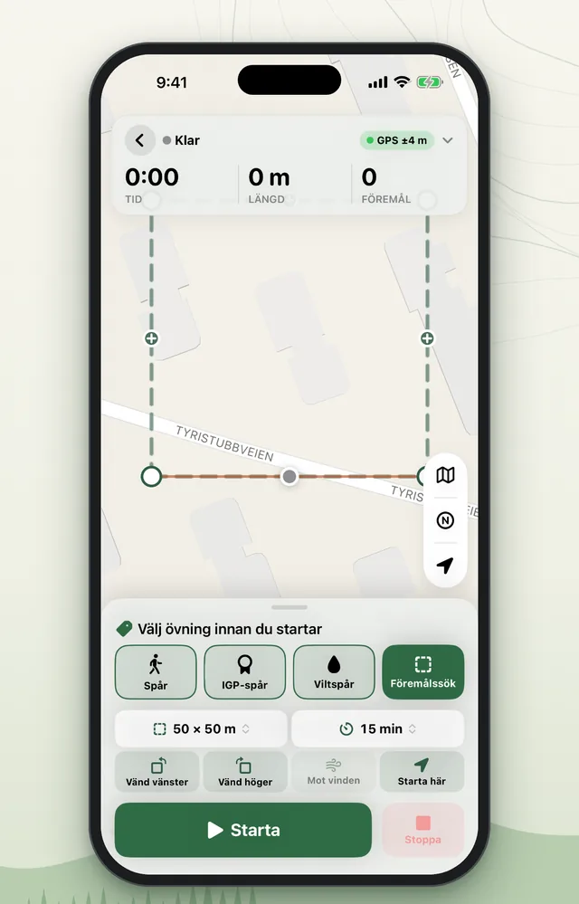
Välj övningSpår, IGP-spår, viltspår eller föremålssök. Rita rutan på kartan och sätt en tidsgräns. 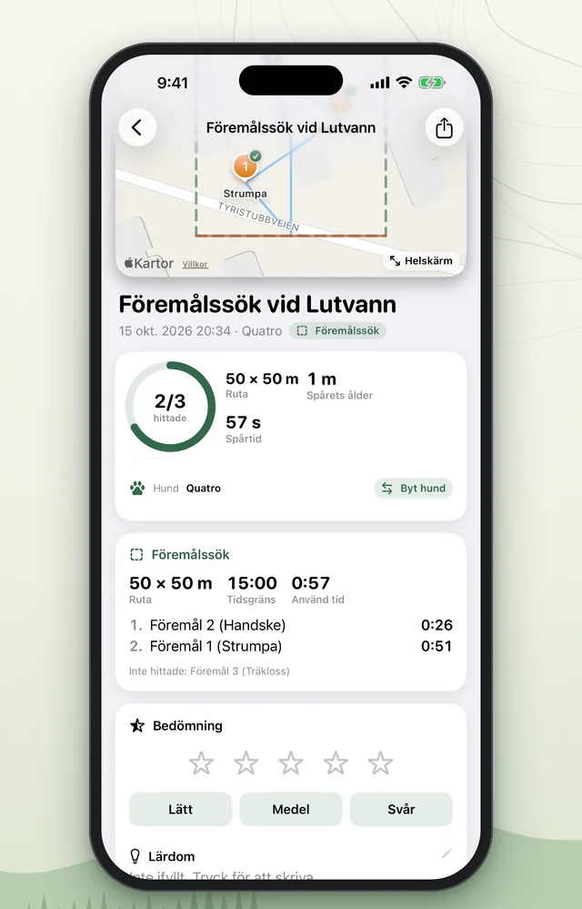
Föremålssök och ytsökSe vilka föremål hunden hittade och hur lång tid varje fynd tog. 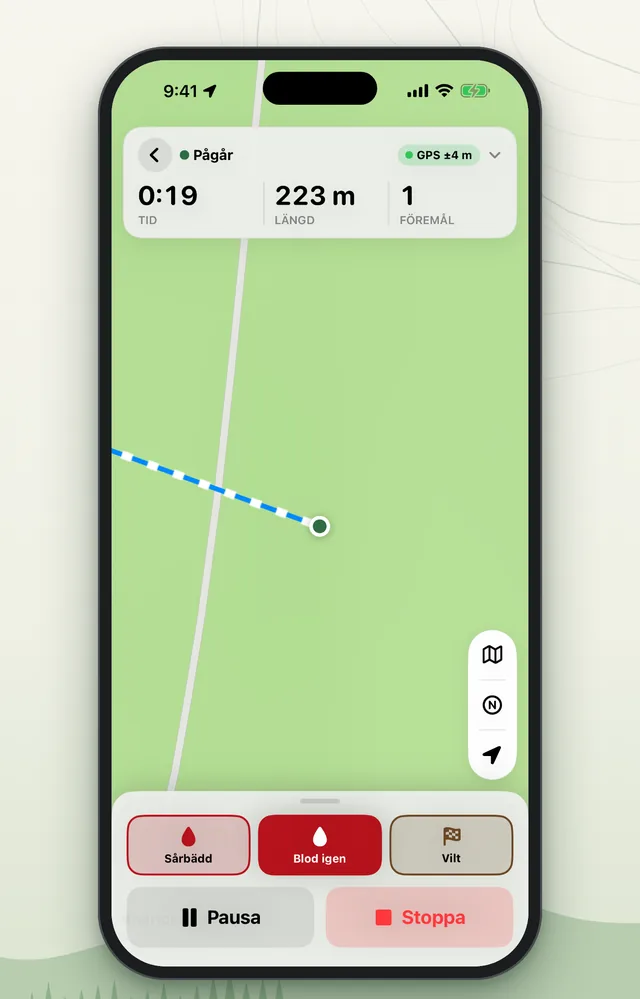
ViltspårMarkera sårbädd, blod igen och vilt med ett tryck medan ni arbetar er igenom spåret. 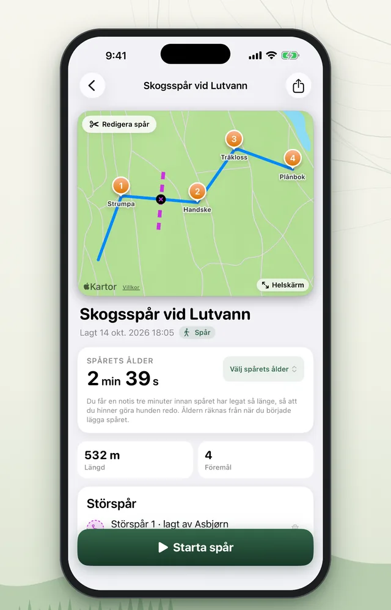
StörspårLägg ett färskare spår på tvären och se spårets ålder räknas ner innan ni startar. 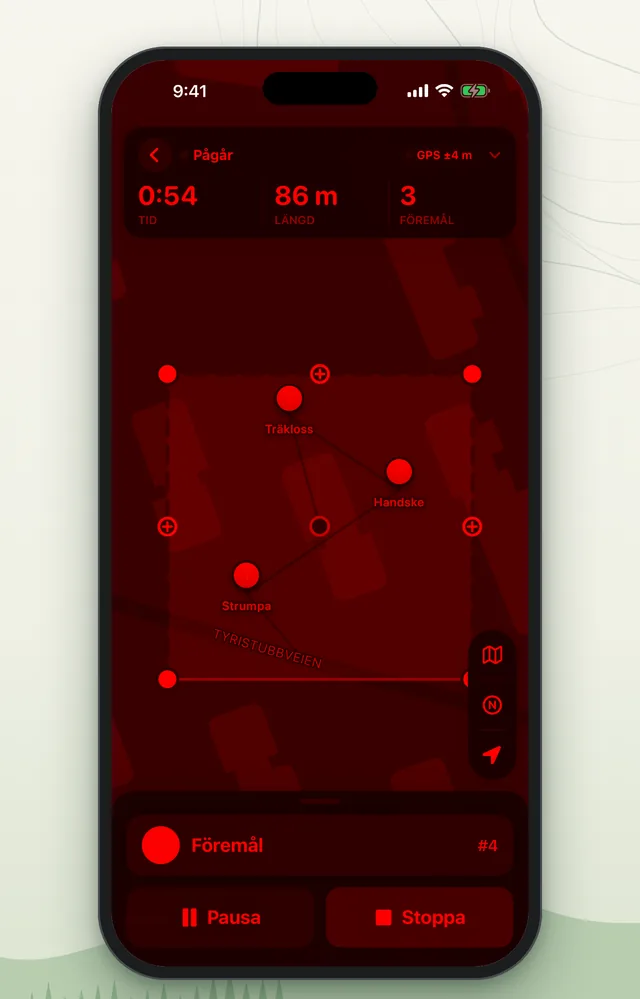
NattlägeRött ljus på skärmen när du tränar i mörker.
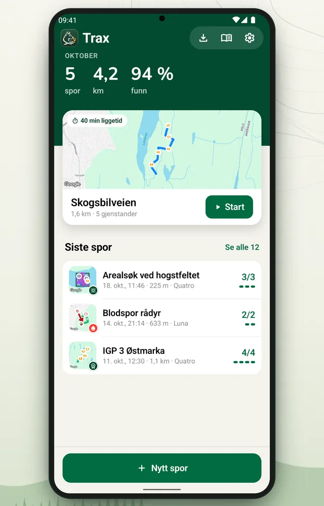
Allt på ett ställeMånadens siffror, spår som är redo att starta och dina senaste spår. 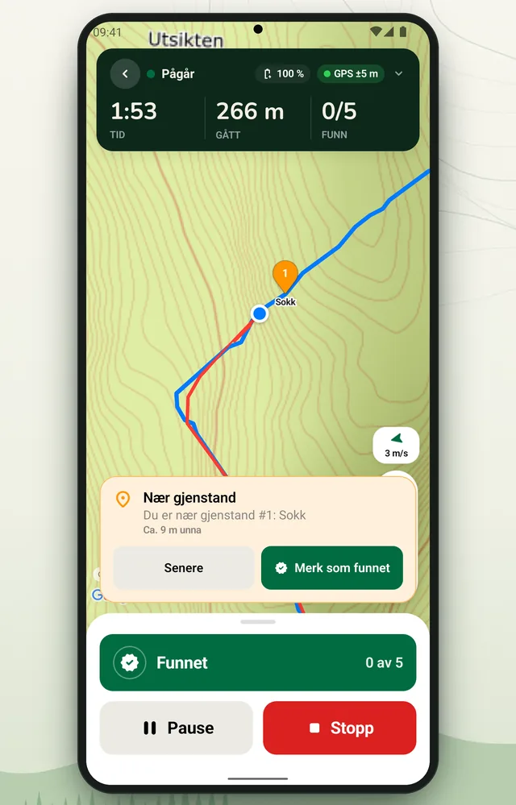
Markera fynd under spåretTrax säger till när du närmar dig ett föremål. Ett tryck, så är fyndet registrerat. 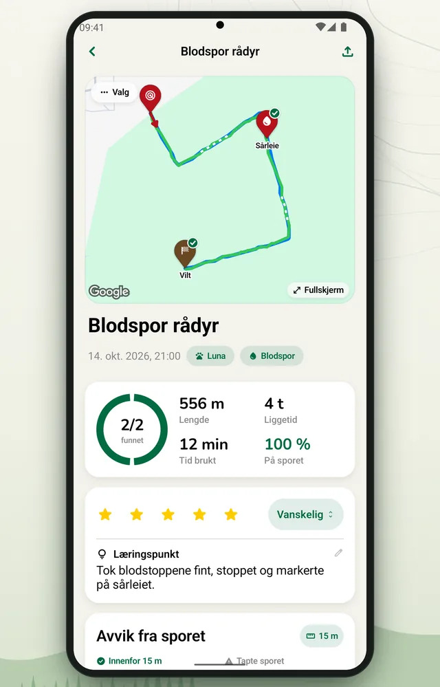
Hela spåret på ett kortKarta, hittade föremål, längd, spårets ålder och hur mycket av spåret hunden följde. 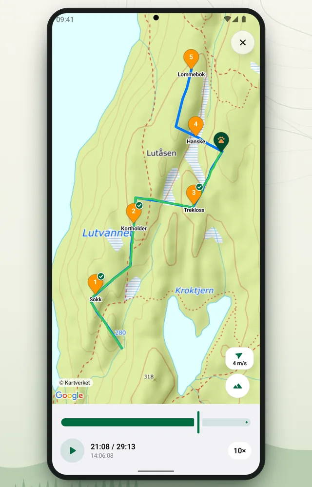
Spela upp spåretSe det lagda spåret och hundens väg sida vid sida, i upp till 10x fart. 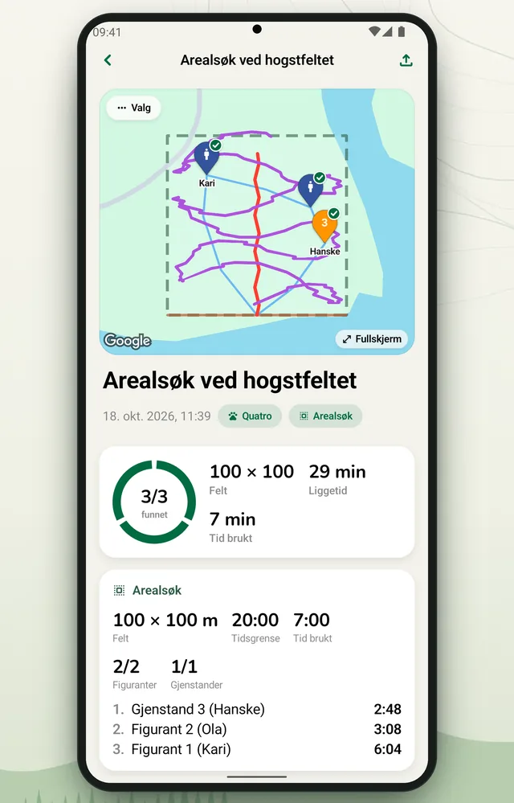
Föremålssök och ytsökSe vilka föremål och figuranter hunden hittade och tiden till varje fynd. 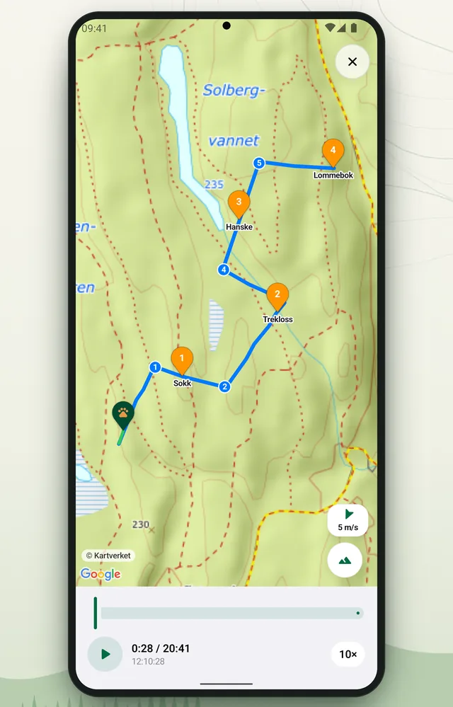
IGP-spår med vinklarNumrerade vinklar och föremål, och hundens väg ovanpå det lagda spåret. 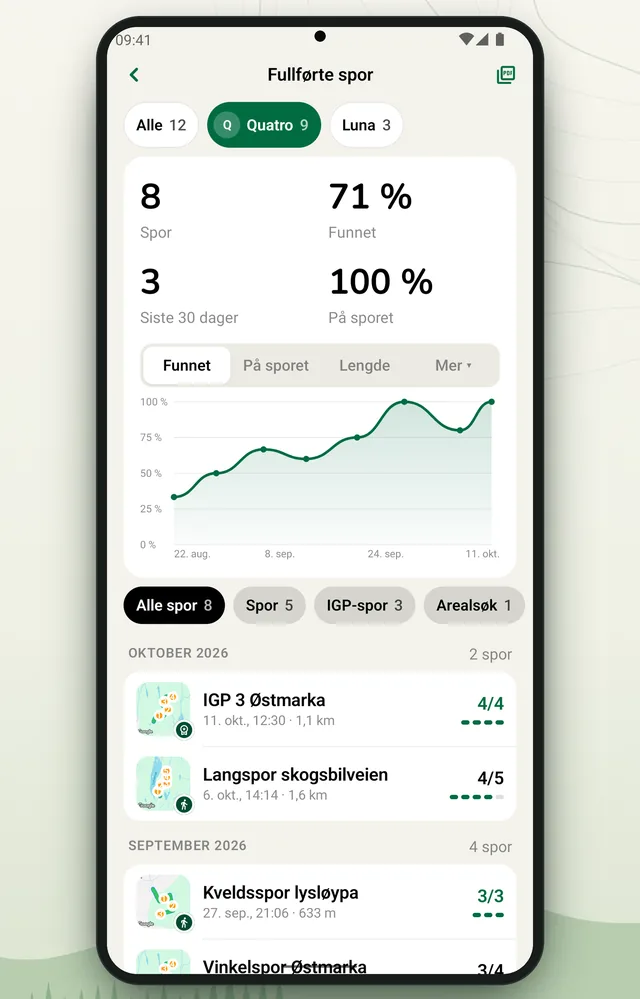
Följ utvecklingenFynd, hur väl hunden höll spåret och längd över tid, för varje hund. 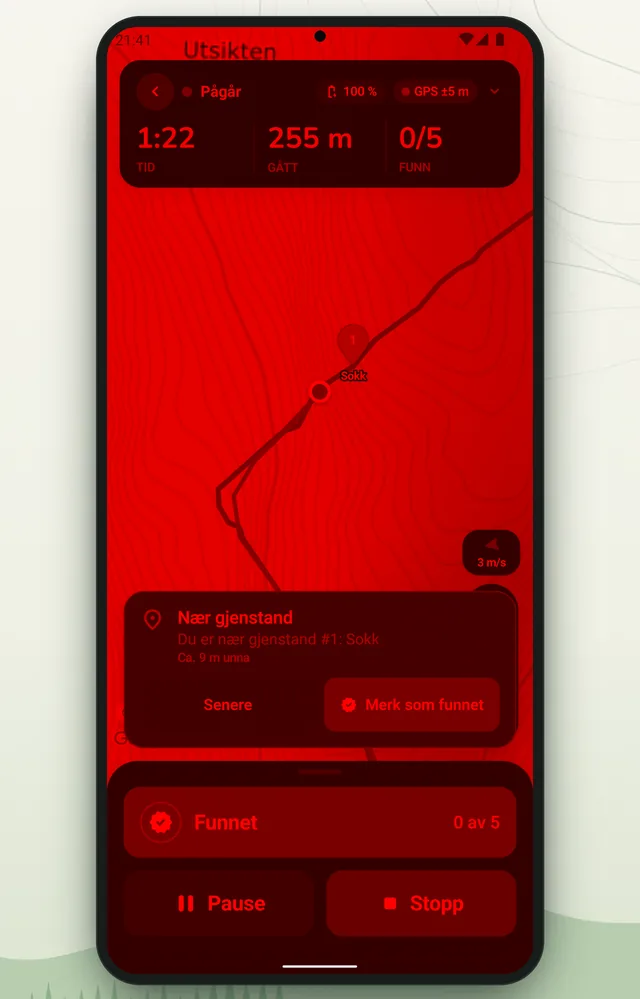
NattlägeRött ljus på skärmen när du tränar i mörker.
Gjord för riktig spårträning
Mer än en GPS-logg. Trax kan spårarbetet.
- Spårets ålderNedräkning på låsskärmen, och en avisering fem minuter innan spåret är klart.
- RöstaviseringarHör det när du närmar dig ett föremål.
- ViltspårSårbädd, blodavbrott, vilt och flyktriktning.
- Okänt spårSpåret och aviseringarna döljs tills du stoppar.
- StörspårLägg ett färskare spår på tvären, med avisering före korsningen.
- Tappat spårTelefonen vibrerar när ni kommer bort från spåret.
- Fynd automatisktFöremålet registreras som hittat när du kommer fram till det.
- Meter mellan föremålSe hur långt det är sedan förra föremålet medan du lägger spåret.
- Skicka som okänt spårMottagaren ser bara starten tills spåret är spårat.
- Håll in StoppaSpåret avslutas inte av misstag.
- NattlägeRött ljus på skärmen, med spåret och positionen väl synliga.
- Föremålssök och ytsökGör ett område på kartan och sök efter föremål eller figuranter, med tidsgräns och egen statistik.
- Vind och väderVindpil på kartan och vädret när hunden startar spåret.
- Bedömning av spåretGe betyg, svårighetsgrad och en lärdom efter varje spår.
- Redigera spårKlipp bort början och slutet av ett spår i efterhand.
- Flera spår i en PDFExportera många spår samlat, till exempel till träningsdagboken.
- SäkerhetskopiaAutomatisk kopia av alla spår och hundar till iCloud Drive.
- Välj språkSvenska, norska, engelska eller tyska, oberoende av språket på telefonen.
Nytt i version 2.3
Version 2.3 finns nu i App Store, som en gratis uppdatering för alla som har appen. Den är gjord för dig som tränar IGP.
- IGP-nivå och kravkontrollVälj nivå från IGP-V till FH 3, se steg mot kravet medan du lägger spåret och få en avisering om en vinkel eller ett föremål kommer för tidigt.
- IGP-mall på kartanLägg spåret efter en mall för nivån, med sträckor, vinklar och föremål. Trax säger till när nästa vinkel kommer.
- IGP-träningAnteckna mat i spåret, start, vinklar och spårläggare, och se nedtrappningen av mat över tid.
- Markering per föremålLigg, sitt, stå, apport eller förbi, med ett tryck efter ”Hittat”. Registrera även falsk markering.
- TräningsmomentSkapa egna moment som ”Spetsig vinkel”, välj dem när du lägger spåret och bedöm dem efteråt.
- Mål per hundSätt ett mål med deadline, till exempel längd och spårets ålder, och följ utvecklingen på hundkortet.
- Lagt för hundMarkera vilken hund spåret är lagt för, och lägg till en ny hund direkt där du väljer.
- Kartan ligger kvarDra i kartan så ligger den kvar där du lämnade den. Tryck på positionsknappen för att följa igen.
Du får också arbetstid och filter på IGP-nivå i utvecklingsgrafen, en tydligare sida för aviseringar, ett enklare sparblad efter spåret och ”PDF för hund” i appens färger.
Dela spåret med en bild på hunden
Välj en bild från kamerarullen, så lägger Trax spåret, föremålen och siffrorna ovanpå. Du kan dela den som story eller inlägg och välja färgerna på spåret själv. Vill du hellre visa bara spåret får du det på en grön bakgrund.
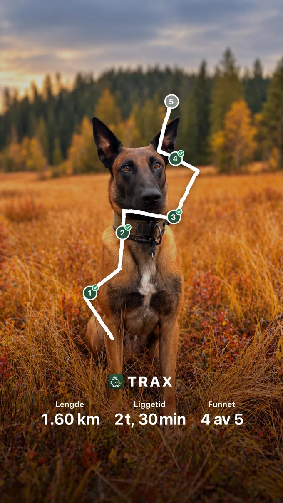
Skicka spåret till hundföraren
Spårläggare och hundförare behöver inte använda samma telefon. Tryck på ”Till en annan Trax-användare” och skicka spåret med AirDrop eller e-post, så öppnas det direkt i Trax hos mottagaren, redo att spåra. Inget konto och ingen inloggning.
Använd AirDrop eller e-post, inte Meddelanden. Om meddelandet går som sms kommer filen inte fram.
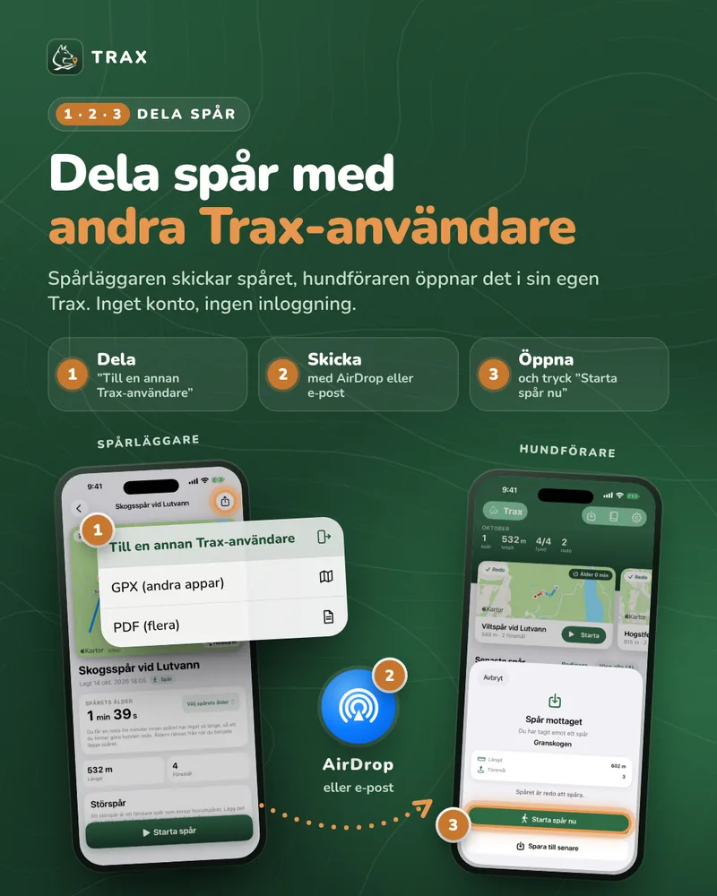
Gjord av en hundförare
”Jag tränar hund nästan varje dag, och spår är något av det roligaste jag gör.”
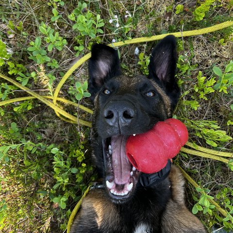
Trax gjorde jag för att jag ville ha en enkel app som gör precis det spårarbetet behöver. Jag använder den själv när jag tränar med Quatro, min malinois, och arbetar hela tiden med att förbättra appen så att den täcker alla behov. Jag svarar på alla frågor själv.
Behöver du hjälp?
Skicka ett mejl så svarar jag så snart jag kan, oftast inom två arbetsdagar. Beskriv gärna vad du försökte göra, vilken telefon du har (iPhone eller Android) och vilken version av iOS eller Android den kör, och bifoga en skärmbild om det går.
post@trax-dogtracking.noVanliga frågor
Spåret blir inte exakt
Kontrollera att Trax har tillgång till platsen ”Vid användning av appen” och att Exakt plats är påslaget under Inställningar › Trax › Plats. GPS är mindre exakt i tät skog och mellan höga byggnader.
Hur raderar jag mina data?
Allt sparas bara på din telefon. Du kan radera enskilda träningspass i appen, eller radera appen för att ta bort alla data permanent.
Kan jag flytta mina data till en ny telefon?
Dina data följer med när du återställer telefonen från en säkerhetskopia i iCloud eller på en dator. Du kan också exportera träningspass från appen.
Integritet
Allt du registrerar i Trax sparas bara på din egen telefon. Trax har inget konto, ingen egen server och ingen reklam, och utvecklaren har inte tillgång till dina data.
Läs hela integritetspolicyn